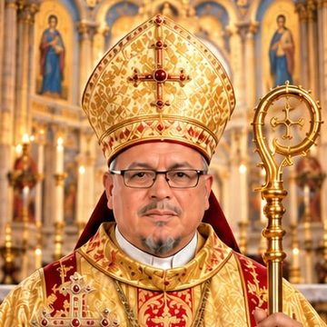
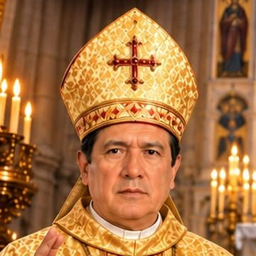
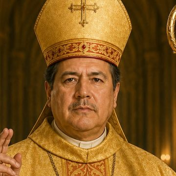
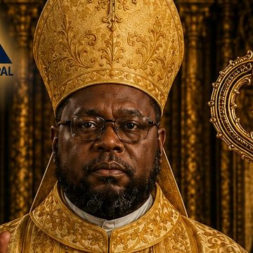
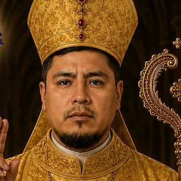
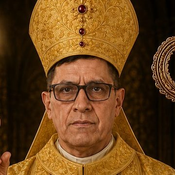
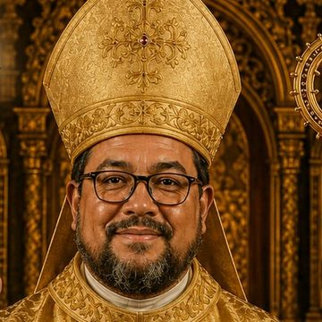
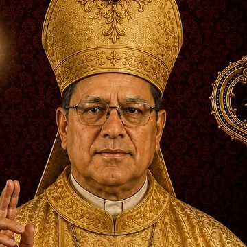

Clero
Nuestro Arzobispo Primado y el gobierno de la Iglesia en el Perú.
Arzobispo Primado

Su Beatitud, Monseñor Francisco Ángel Ernesto Morán Vidal
Arzobispo Metropolita Primado · Presidente del Santo Sínodo de Obispos Mundial
Guía y gobierna la Iglesia con paternal solicitud, ordenado en la Sucesión Petrina. Preside el Santo Sínodo Mundial y el Colegio Episcopal Peruano Latinoamericano (CEPLA).
Consejo de gobierno · Perú
Principales cargos de gobierno de la Iglesia en el Perú.

Vicario General · Secretario General del CEPLA

Gran Canciller · Segundo Vicepresidente del CEPLA

Obispo Lucas / Oscar Mondragón
Colegio Episcopal Peruano Latinoamericano (CEPLA)
Obispos miembros del Colegio Episcopal, entidad con personería jurídica propia que acompaña el gobierno de la Iglesia junto al Santo Sínodo.

Miembro del CEPLA

Miembro del CEPLA

Miembro del CEPLA

Miembro del CEPLA

Miembro del CEPLA
Esta sección presenta el gobierno eclesial con alcance a Perú. Para conocer los fundamentos espirituales y jurídicos de este gobierno, visita Nosotros → Gobierno.